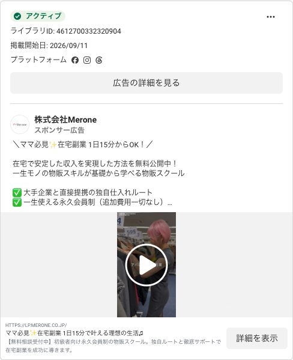
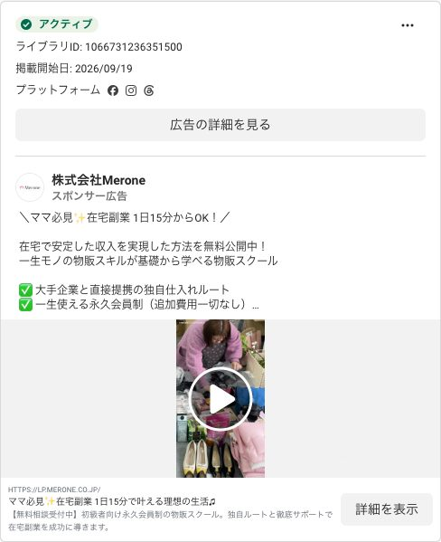

1. いまの流れ（結論：バナーは3つ、入口は1つ、シナリオはAだけ）
Meta広告（3本のバナー）TEST02_offer_v1（動画54秒）／TEST03_filter_v1（動画45秒）／LP_Lead_CR1（本人写真の静止画・推測）
↓ クリック（URLの末尾に「どのバナーか」の名札＝utmが付く）
LP（lp.merone.co.jp）1枚LPの「LINEで受け取る」ボタンは1つだけ。リンク先は j4b9oaqz.autosns.app/line（＝広告用LINEの標準の入口）
↓ 友だち追加
広告用LINE シナリオA（既存の導線）アンケート→動画1本目→2本目→3本目→スクール動画→面談予約。名札は「フリー6」欄に書かれ、9/18以降の登録者にだけ入っている
↓
面談予約 → クローザー面談前ヒアリング・面談は他のアライアンスと同じ
シナリオB（1本目の感想後に面談予約を解放）とC（毎朝7時に1本ずつ配信）は作ってありますが、入口はQRコードだけで、広告からは誰も入っていません。タグの実数は A＝79人、B＝0人、C＝0人です。つまり「バナーごとにA/B/Cを比べるテスト」はまだ始まっていません。
2. バナー（どんな広告が出ているか）

TEST02_offer_v1
動画54秒・9/11開始・配信中「＼ママ必見✨在宅副業 1日15分からOK！／ 在宅で安定した収入を実現した方法を無料公開中」。プロラインのフリー6には ReChe_TEST02_offer_v1 と入る

TEST03_filter_v1
動画45秒・9/19開始・配信中文章は上と同じ。動画が短い版。フリー6には ReChe_TEST03_filter_v1 と入る
LP_Lead_CR1
静止画（本人写真・推測）・平田さん報告では配信中フリー6には 120248066020410521 または ReChe_LP_Lead_CR1 と入る（同じ広告の2通りの書き方）。Metaの広告ライブラリでは「広告がありません」と表示され、見た目を確認できませんでした。
広告ライブラリで公開されているMeroneの広告は、この2本だけです（アクティブのみ表示・9/26確認）。過去に回した TEST02_offer_v2 と TEST01_taidan_v2 は停止中です。
3. バナー別の進み具合（9/18以降に名札が付いた人）
| バナー（フリー6の値） | 登録 | アンケート回答 | 面談まで | 成約 | シナリオ |
|---|
| TEST03_filter_v1 | 52 | 21（40%） | 4 | 0 | A |
| TEST02_offer_v1 | 46 | 6（13%） | 0 | 0 | A |
| TEST02_offer_v2（停止） | 25 | 7 | 1 | 1 | A |
| LP_Lead_CR1（2表記合算） | 18 | 2 | 0 | 0 | A |
| TEST01_taidan_v2（停止） | 6 | 2 | 0 | 0 | A |
| link_in_bio（インスタのプロフィール） | 3 | 1 | 0 | 0 | A |
| main（名札なし扱い） | 1 | 0 | 0 | 0 | A |
| 空欄（9/18より前の登録・名札が外れた人） | 207 | 68 | 11 | 6 | A |
いま分かっていること。同じ文章でも、45秒の動画（TEST03）はアンケート回答が40%、54秒（TEST02_v1）は13%で、3倍の差があります。面談に進んだのもTEST03の4人だけです。成約2人（Miki・kae）は名札が付く前の登録なので、どのバナーかは分かりません。
4. シナリオA・B・Cとは
79人A：既存の導線
登録→アンケート→動画1本目→2本目→3本目→スクール動画→面談予約。広告のLPからはここに入る。
0人B：アンケートなし・1本目の感想を出したら面談予約ができる
入口はQRのみ（j4b9oaqz.autosns.app/addfriend/s/bK7xCSwUME/@038atjsh）。性別・職業・年収は取れない。
0人C：毎朝7時に1本ずつ配信・2本目と同時に面談予約ができる
入口はQRのみ（j4b9oaqz.autosns.app/addfriend/s/Zps9fHuKNx/@038atjsh）。
未作成D：最初からスクール動画を見せて、すぐ面談予約できる
予約後に仕入れ動画・対談動画を当日までに見てもらう案。平田さんの当初案にはあったが、ひかさんの設定時に除外された（9/25）。
平田さんの当初案は「A：既存／B：アンケートなしで1本目の感想後に予約解放／C：時間で自動的に次へ進み2本目で予約解放／D：最初からスクール動画で即予約」のABCD比較でした。
「ABテスト_A/B/C」のタグは、その入口から入った人に自動で付きます。LPのボタンがAの入口にしかつながっていないので、B・Cには広告の人が入れません。
5. クローザー・アクセラの見方
- その人がどのバナーを見たかは、プロラインの友だち情報の「フリー6」欄を見てください（トーク画面右の友だち情報）。値と広告の対応は上の表です。
- フリー6が空欄の人は、9/18より前に登録した人か、リンクを保存し直して登録した人です。バナーは分かりません。
- 「main」はインタレストマッチ（Meta以外の広告）のはずですが、いまは1人しかおらず、本当にそう分けられているかは確認できていません。「main＝インタレストマッチ」とは断定しないでください。
- 面談に来た人へ「どの動画（広告）で知りましたか」と一言聞いて、面談報告に書いてもらえると、名札が無い人の穴が埋まります。
6. 本当のABテストにするには（提案）
「バナー×シナリオ」を比べるには、入口を分けるだけで足ります。LPは1枚のままです。
| やること | 誰が | 効果 |
|---|
| 広告ごとに「友だち追加URL」を作り、入口タグ（入口_TEST03 など）を自動付与 | アクセラ（プロライン） | 名札が外れず、9/18以前のような空欄がなくなる |
| LPのボタンのリンク先を、広告ごとに対応する友だち追加URLに切り替える | 平田さん（Metaの広告のリンク先URL） | バナーごとに入口が分かれる |
| B・Cの入口URLを、テストしたいバナーのリンク先に割り当てる | くみこ判断→アクセラ | 「バナーA×シナリオB」のような組み合わせが読める |
| インタレストマッチには専用の友だち追加URL（入口_IM）を渡す | 平田さん | Metaと確実に分かれる |
Meta側の消化額・クリック・登録単価は、Metaのトークン（9/25に失効）を再発行してもらえれば、このページに広告ごとに載せられます。
作成 2026-09-26。出どころ：プロライン広告用口座（フリー6・タグ）、Meta広告ライブラリ（公開ページ）、LPのHTML、ひかさんのA/B/C設定報告、平田さんの報告。